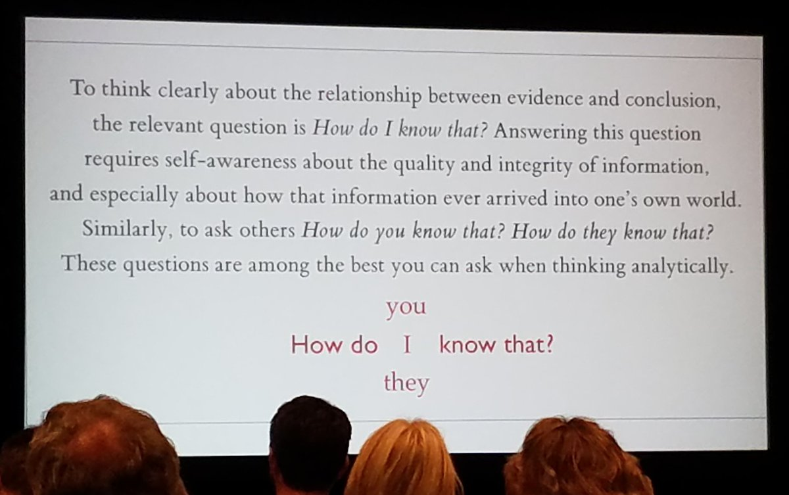

Section 8 A Few Writing/Presenting Tips
Statistics is a “getting the details right” business - we care deeply about details, and this applies to writing code or complete English sentences.
Nothing impresses us as much as a clear and concise argument, presented using well-written English sentences, effective and well-labeled figures and tables.
Don’t parrot back material that Dr. Love wrote or said. State ideas in your own words. Stating them in other words is, technically, plagiarism.
Edit your more adventurous output; don’t present everything you know how to do in R, and don’t forget that someone is trying to read both your code and your results.
Make your work easy to evaluate. In responding to an assignment, be sure to answer the question that was asked, restating it as necessary.
Clearly label everything: graphs, tables, your answer to a specific question. Everything. Again, make your work easy to evaluate.
Simplify. Emphasize ideas in plain language. Avoid jargon. Use English well.
Data are plural. Use “the data are …” rather than ``the data is … ’’
A paragraph must contain more than one sentence.
Don’t switch tenses. If you want to write in the present tense, stick to it throughout.
Don’t write or say random sample unless you used a random number generator. If you used haphazard sampling or convenience sampling, call it what it is, and indicate whether any problems could have cropped up as a result.
Similarly, don’t defend a method of data collection because it is random. Most of the time we want to represent some population, and a random sample is just one way to ensure that certain types of biases have a low probability of creeping in.
If you want to write that you used \(\alpha = 0.05\) as your significance level, then state that your results were obtained using a 95% confidence level, not a 95% confidence interval, unless you are actually interpreting a confidence interval.
If you’re looking at a p-value, then you should state either:
- [1] We’re using a 95% confidence level.
- [2] We’re using a 5% significance level. or
- [3] We’re using \(\alpha = 0.05\).
- Don’t use more than one of these expressions.
- [1] We’re using a 95% confidence level.
Refer to all p-values that are less than 0.001 or perhaps less than 0.0001 as \(p < 0.001\), rather than, for instance, \(p = 0.00000001\) or, worse yet, \(p = 0\). In a similar vein, write all \(p\)-values that exceed 0.99 as \(p > 0.99\) instead of, for instance, \(p = 1\).
To the extent possible, don’t use
computer-eseto label variables, plots or tables. R and Markdown allow you to change the labels on graphs and tables to meaningful things – do so. Use meaningful abbreviations, as necessary, explaining what they mean on the first usage.Use words that we all know, whenever possible, and provide clear definitions at the first encounter when jargon is mandatory.
Often the most useful thing you can do in an analysis is to turn a table into a meaningful graph.
When in doubt, err on the side of clearer expression. Clear thinking causes and is demonstrated by clear writing.
In the words of Edward Tufte, to think clearly, keep asking yourself …
